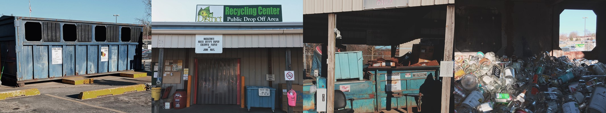

Background
back to topWhat would waste management practices look like in the smart cities? How could we best harness existing resources and elevate current infrastructures to develop future solutions for the local community?
For this project, we collaborated with local waste management facilities for field studies and co-design sessions, designed a service providing educational content throughout the city utilizing big data and artificial intelligence, with the goal of cultivating a more informed and connected community.
The service itself was built upon an information and knowledge exchange system (GIKES) with a voice-based intelligent assistant (KIP) as the front-end at different touchpoints. Read on to see the breakdown of the service and how the field studies informed and inspired our final concept.
Stakeholders
back to topService Provider
Solid Waste Management District at Monroe County, Indiana (operated and branded under the name Go Green District) is the local waste management authority at Bloomington with the mission of providing recycling services, offering educational resources, and promoting sustainable practices.
Target Users
Among all the city residents, our service would mainly target those in the community who are not against recycling practice yet have not established a regular routine of doing so.
Take our persona Chelsea for example, who’s an English teacher at local high school living with her husband and two kids. She is relatively proficient in technology, mostly surfing the web through her phone outside of work. Her family has recently started practicing recycling after some conversations regarding environmental protection she had with colleagues, but they’ve still got a lot to learn and are unsure where to start.

Touchpoints
Throughout the city, the service would interact with residents at the following touchpoints with different formats, which through our research that we believed would be the most effective in terms of delivering information based upon the infrastructure Go Green had currently.
GIKES & KIP at Different Touchpoints


Concept
back to topTo further illustrate how the service would play out with a user, below is the service blueprint and customer journey of our persona Chelsea interacting with KIP (the voice-based intelligent assistant) on the phone as an example.
Through KIP, GIKES would learn from data gathered and present relevant information to people. Aggregated search queries in the knowledge base and overall interaction would shape the entire system and allow further analysis for Go Green to better inform and communicate with the community. In addition to creating a more informed and connected community, the service was also created in benefit of Go Green to lessen the workload of responding to general inquiries about recycling in Bloomington.
Research & Insights
back to topSo, how did we get down to GIKES and KIP by the end? It all began with one visit to Go Green District which led to various sessions with Tom McGlasson (Executive Director) and Elisa Pokral (Media & Education Director). This collaborative process has produced not only great insights for the project, but also an informative experience for us on practicing ethnographic methods.
User InterviewLearning from the Experts
Going into the project with the goal of collaborating with the community but very little knowledge on local waste management practices, we considered it essential for us to talk to domain experts that were actually in service of the field. While in Bloomington, outside city government and the University, Go Green was the one that serve most residents and offer the widest range of services.
The first meeting with the director Tom was extremely valuable in learning about issues in waste management such as their struggles with policy, funding, outreach, etc. Out of all initiatives, education and public awareness were the areas which Go Green believe to have the most potentials. The session also allowed us to conduct on-site observation of the recycling center and establish a collaborative relationship with them.
ToolkitsCo-design with the Community
From the first session with Tom, we narrowed down our focus more specifically on community outreach and education. The next-level goals were to elicit more underlying information about their interactions with different stakeholders, more detailed workflows of the programs, etc. To achieve so, we created a number of toolkits with varying goals and methods to facilitate our upcoming sessions with participants.
Goal
Getting a better sense of Elisa's experience interacting with different audience
Method
Have participant gone through her highs and lows of interactions she had while running different programs


Goal
To understand current infrastructure by visualizing interactions between Go Green and different organizations
Method
Have participants drawing out the connections Go Green has around the county and describe those relationships with relevant keywords


Goal
Learning about Tom’s experience dealing with different issues and scenarios that would not come up through conventional interview methods
Method
Present a series of pictures related to waste management, and probe him to write down what kinds of thoughts and emotions they conjure up


Goal
To visualize the recycling process and the struggles that may happen at different point
Method
Place items in front of our participants and ask them to explain the story of how an object goes from being used to being recycled with storyboard materials


InsightsIdentify Touch Points & Design Opportunities
To get a systematic view of how Go Green’s current education and public awareness campaign looked like, we mapped out their interaction with the community at different touchpoints. Among them, we identified school education, public libraries, on-site help desk and calls/online to be the primary ones which offered most potential for intervention.
Mapping of Stakeholders & Existing Interactions

On top of that, information was distributed sporadically with old-school methods of pamphlets, flyers and posters that were near impossible to assess their effectiveness. At the same time, lots of resources they provided were under-used, and they received inquiries of basic information on a daily basis.